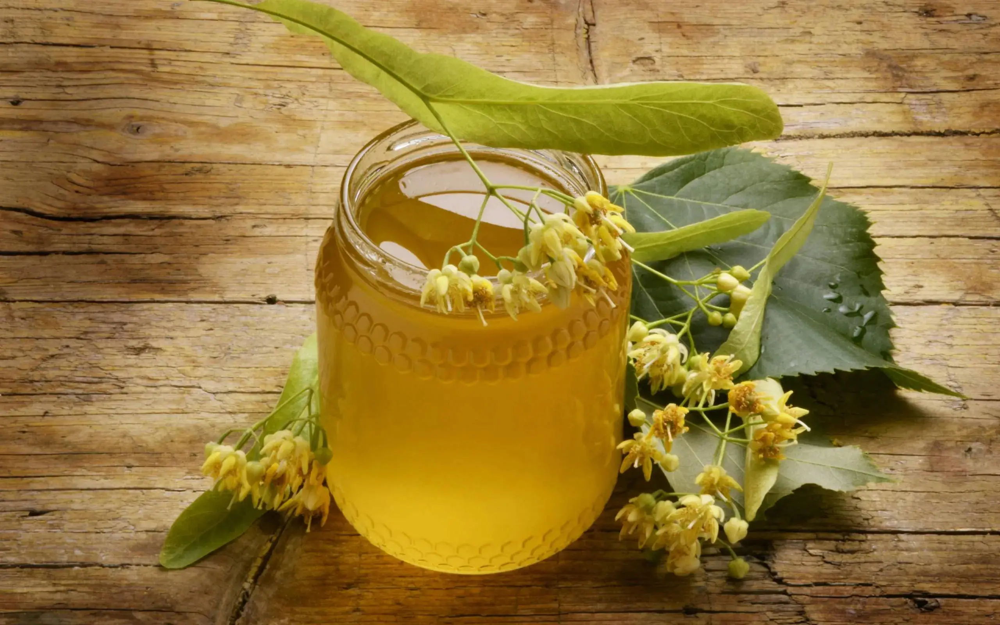
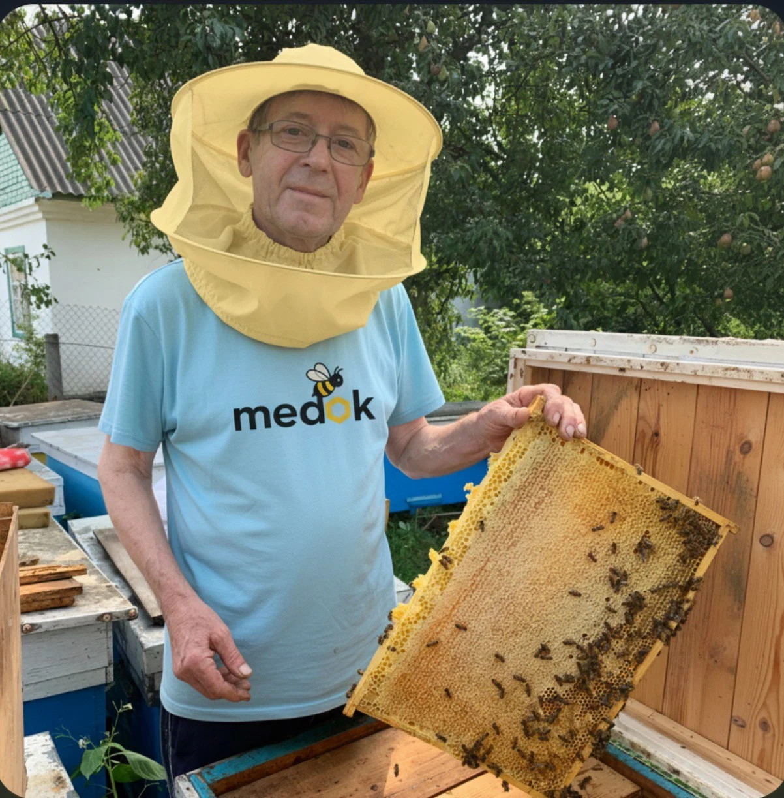

01 · Квітковий і збалансований
Різнотрав’я
- Квітковий букет із лугів і гаїв
- Збалансований смак, універсальний
Мед із сімейної пасіки
Натуральний акацієвий, липовий мед і різнотрав’я з Бориспільського району. Від пасіки — до вашого столу, з доставкою по Україні.

Збираємо й фасуємо самі
Без домішок
Доставка по Україні
Колекція сезону
Від делікатної акації до виразного різнотрав’я. Натисніть «Обрати об’єм», щоб побачити доступні формати й точну ціну.
01 · Квітковий і збалансований

02 · Запашний і теплий

03 · Ніжний і прозорий

04 · Насичений і кремовий

Люди за кожною банкою
Наша сім’я працює з бджолами понад 40 років. Самі доглядаємо пасіку, відкачуємо мед і готуємо його до відправки — спокійно, уважно, без зайвого.
Просто замовити
Обираєте сорт і об’єм — ми підтверджуємо деталі та відправляємо мед Новою поштою.
Порівняйте сорти, об’єми та ціни.
Вкажіть контакт і зручне відділення.
Надсилаємо Новою поштою по Україні.
Коротко про важливе
Відповіді про склад, доставку й самовивіз. Більше деталей — на окремій сторінці.
Усі питання та відповідіНі. У банці — натуральний мед без доданих домішок.
Зазвичай відправляємо щодня. Доставка Новою поштою переважно займає 1–2 дні залежно від міста.
Так, із пасіки в Бориспільському районі за попередньою домовленістю телефоном.
Смак Київщини
Три сорти зараз у наявності. Почніть із того, який найбільше схожий на ваш ранок.